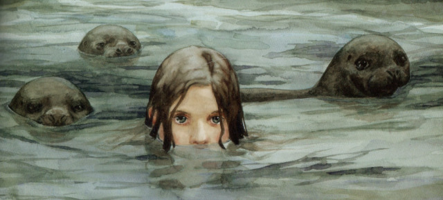

Selkies are a creature from Celtic Mythology in Ireland and Scotland. In water selkies take the form of a seal, though on land they can shed their seal pelt and take the form of a human. The stories of Selkies are most common in the Northern Isles of Scotland, but their stories can also be found in Ireland, the Isle of Man, and even in Nordic nations like the Faroe islands and Iceland.
While there are many different stories that involve Selkies, the most common one is of a selkie's pelt being stolen. This is most often in the form of a man finding a selkie woman after she has transformed into a human and stealing her seal pelt. Since a selkie can't transform back into a seal without their pelt, the selkie is forced to follow the man and is normally forced to marry him. After being with him for years and possibly having children with the man, the selkie finds where her pelt was hidden and escapes to the ocean.
Because of the legend of the selkie, there are superstitions in parts of Scotland and Ireland that if someone killed a seal misfortune would come upon them. There are also legends that a clan in Ireland was descended from seals, with that clan believing in the superstitions about killing seals.
Selkies in Pop Culture
In modern times, Selkies have been prevalent in a few different stories:
- The Secret of Roan Inish, which was based on the novel 'Secret of Ron Mor Skerry'
- Selkie
- Ondine
- Song of the Sea